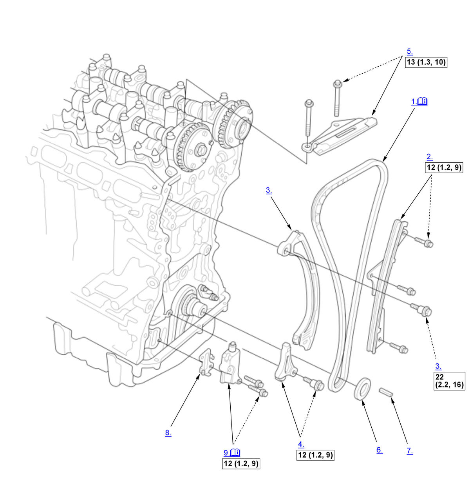
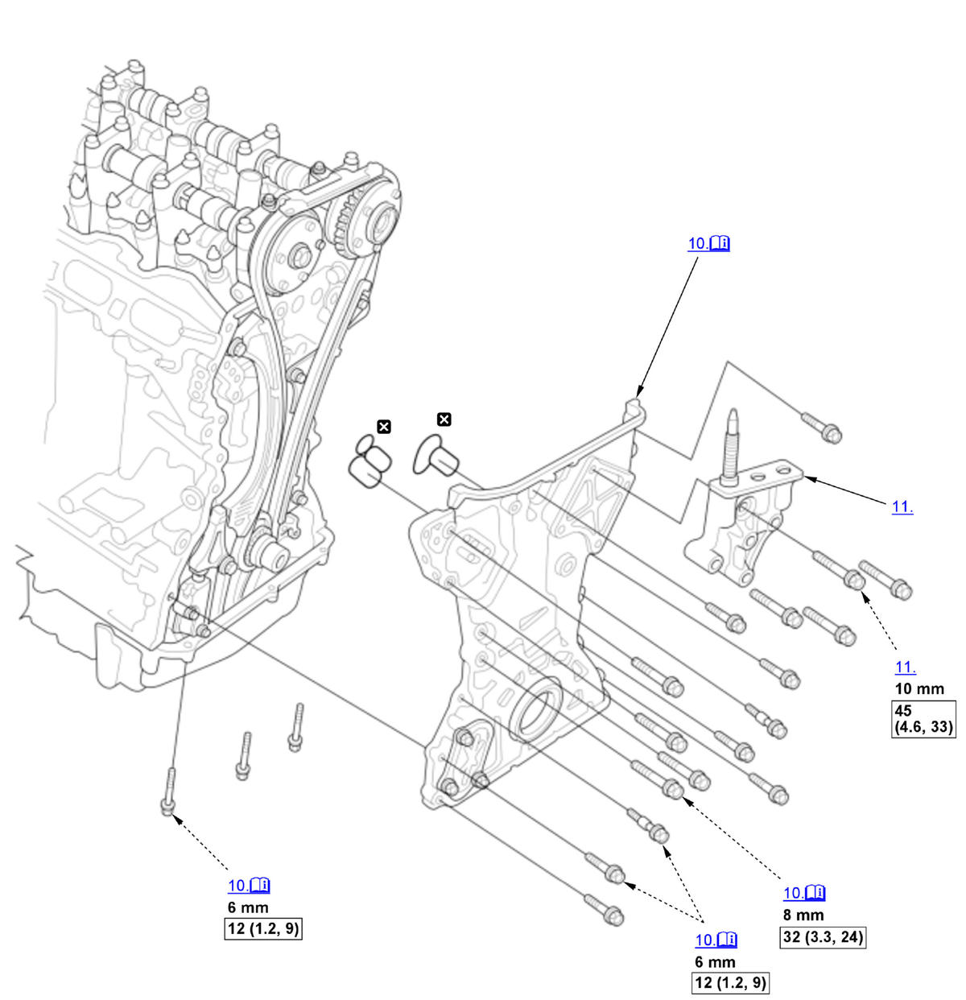
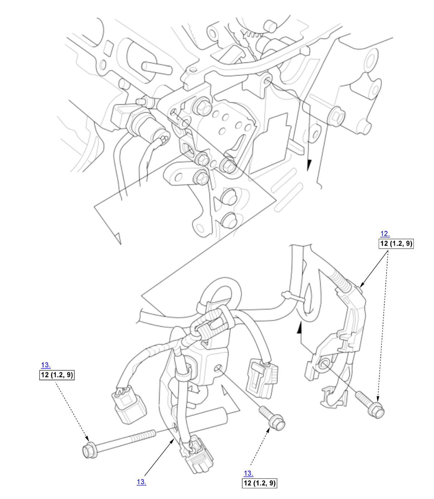

Cam Chain Removal and Installation (K20C1) (2017 2018 2019 2020 2021): Installation: Procedure
NOTE:
Numbered call-outs in figure pertain to list numbers in following procedure.
Fig 1: Exploded View Of Cam Chain Components With Torque Specifications For Installation (K20C1 - 2017-21) (1 Of 3)

Courtesy of HONDA, U.S.A., INC. |
Detailed information, notes, and precautions |
 |
Torque: N.m (kgf.m, lbf.ft) |
NOTE:
Numbered call-outs in figure pertain to list numbers in following procedure.
Fig 2: Exploded View Of Cam Chain Components With Torque Specifications For Installation (K20C1 - 2017-21) (2 Of 3)

Courtesy of HONDA, U.S.A., INC. |
Detailed information, notes, and precautions |
|
Torque: N.m (kgf.m, lbf.ft) |
 |
Replace |
NOTE:
Numbered call-outs in figure pertain to list numbers in following procedure.
Fig 3: Exploded View Of Cam Chain Components With Torque Specifications For Installation (K20C1 - 2017-21) (3 Of 3)

Courtesy of HONDA, U.S.A., INC. |
Torque: N.m (kgf.m, lbf.ft) |
- Cam Chain - Install
1. Set the crankshaft to top dead center (TDC). Align the TDC mark (A) on the crankshaft sprocket with the pointer (B) on the engine block. 2. Set the No. 1 piston at top dead center (TDC). The "UP" mark (A) on VTC actuator B should be at the top. Align the TDC marks (B) on VTC actuator A and VTC actuator B. The TDC marks (C) on VTC actuator B should line up with the top edge of the head (D). 3. Insert the camshaft lock pin set to the camshaft maintenance hole. 4. Install the cam chain on the crankshaft sprocket with the colored link plate (A) aligned with the mark (B) on the crankshaft sprocket. 5. Install the cam chain on VTC actuator A and VTC actuator B with the punch marks (A) aligned with the center of the colored link plates (B). - Cam Chain Guide A - Install
- Cam Chain Tensioner Arm - Install
- Cam Chain Tensioner Sub Arm - Install
- Cam Chain Guide B - Install
- Spacer - Install
- Key - Install
- Cam Chain Auto-Tensioner Filter - Install
- Cam Chain Auto-Tensioner - Install
1. Remove the camshaft lock pin set from the camshaft maintenance hole. 2. Compress the cam chain auto-tensioner when replacing the cam chain. Remove the pin (A) from the cam chain auto-tensioner that was installed during removal. Turn the plate (B) counterclockwise, to release the lock, then press the rod (C), and set the first cam (D) to the first edge of the rack (E). Insert the 1.2 mm (3/64 in) diameter pin back into the holes (F).
NOTE: If the cam chain auto-tensioner is not set up as described, the tensioner will be damaged.3. Install the cam chain auto-tensioner. 4. Remove the pin (A) from the cam chain auto-tensioner.
- Cam Chain Case - Install
1. Check the pulley end crankshaft oil seal for damage. If the oil seal is damaged, replace the pulley end crankshaft oil seal. .
2. Apply liquid gasket to the cylinder head, the engine block and the oil pan mating surface of the cam chain case and to the inside edge of the threaded bolt holes.3. Set the edge of the cam chain case (A) to the edge of the oil pan (B), then install the cam chain case on the engine block (C). Wipe off the excess liquid gasket on the oil pan and the cam chain case mating area.
NOTE: When installing the cam chain case, do not slide the bottom surface onto the oil pan mounting surface.
- Side Engine Mount Bracket - Install
- Harness Holder - Install
- Fuel Rail Bracket - Install
- Turbocharger Bypass Control Valve Solenoid Pipe B - Install
- VTC Oil Control Solenoid Valve A - Install
- Rocker Arm Oil Control Valve - Install
- Side Engine Mount - Install
- Cylinder Head Cover - Install
- Drive Belt Idler Pulley - Install
- Drive Belt Auto-Tensioner - Install
- Crankshaft Pulley - Install
- Drive Belt - Install
- Engine Undercover - Install
- Right Front Wheel - Install
- Ignition Timing - Inspect